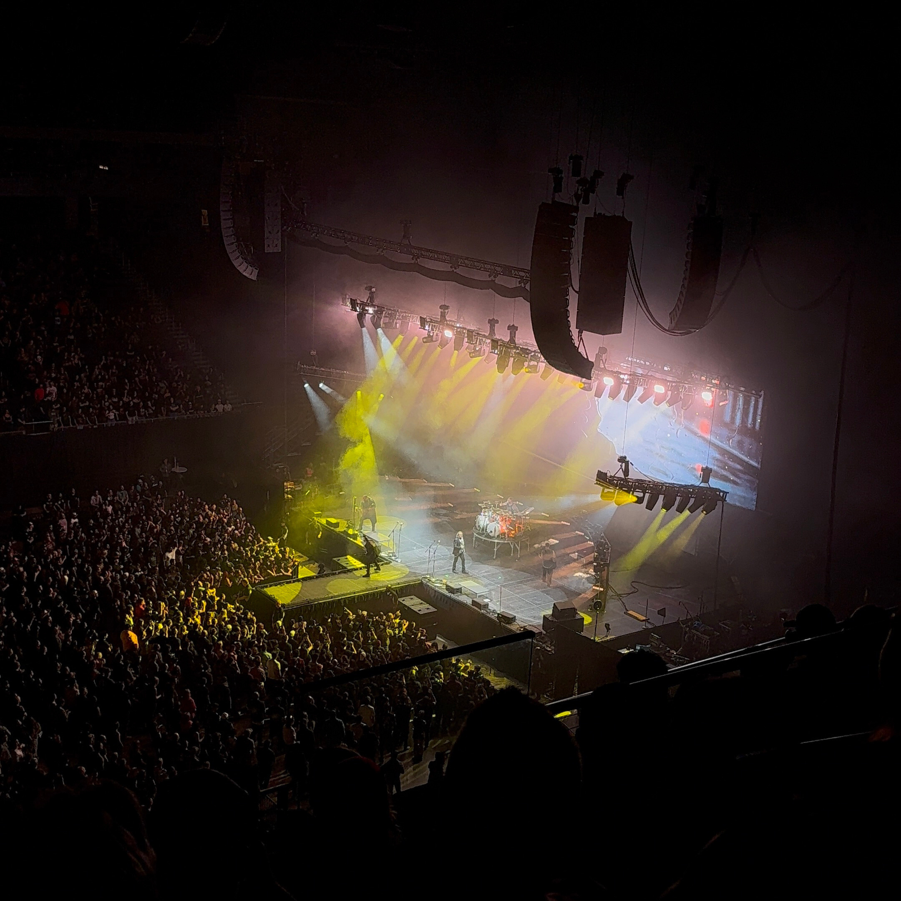

Hobbies
I have been working out for the past 3 years! Whenever I'm at the gym, I am able to relax and just focus on lifting weights so I am able to "forget" about anything stressful. I love mountain biking as well and the picture to the left is my mountain bike! I enjoy cooking any dish from anywhere! I collect vinyl! I also enjoy watching tv shows more than movies, traveling, and listening to music!
TV Shows

Music

The concerts that I've been to are: Cage the Elephant/Young the Giant, Future/Metroboomin, Cigs (CAS), Novulent, Capstan, Splitchain, Chevelle/Asking Alexandria, and Breaking Benjamin/Three Days Grace